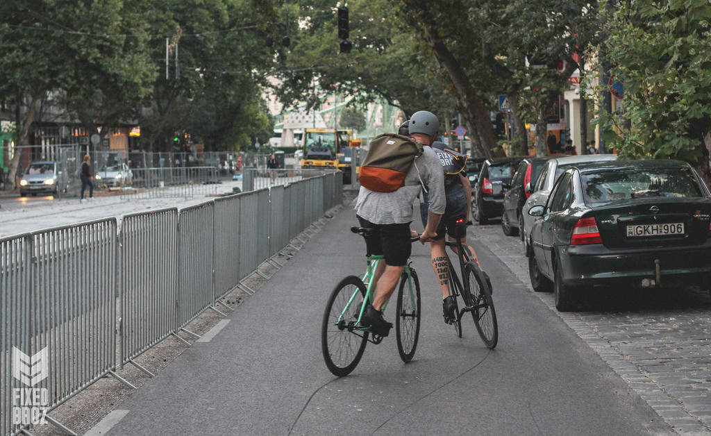

There are 2 most popular ways how to stop quickly on your breakles fix
HOP STOP
The hop stop is similar to the skid stop, however, it is a bit different. While strapped in to your pedals, your goal is going to be to lifting up with the foot that is on the pedal descending while unseated, AND lifting up with your other foot a bit, so as to lift your rear wheel into the air slightly.
While your rear tire is off of the ground, you will basically try to even the pedals in midair before you land. When your rear tire hits the ground, there will be a small skid effect, but, your momentum will cause the wheel and the pedals to spin soon thereafter. Keep hopping the rear tire into the air and doing this until you come to a stop. This is slightly less damaging to your tire than the skid stop (strapless or with straps).
Hop stopping is briefly mentioned in some videos online regarding "how to stop on a fixed gear" but there are no specific videos showing this technique alone.
SKID STOP
Skid stopping is extremely popular among fixed gear riders and can almost be considered a hallmark of the scene. If you've ever seen a cyclist whip their rear tire into a sideways skid while pedaling forward, that was the cyclist skid stopping. While skidding, it becomes possible to shift weight and whip the rear tire out a bit: beware though - if you shift too much weight, you'll find yourself tipping over sooner than you can recover.
To perform a skid stop, apply upward pressure from the foot that is on the pedal that is currently descending and apply downward pressure on the pedal that is ascending. This basically feels like you're trying to even the pedals against the force of momentum that you've built up while accelerating. When performed correctly, you will feel your rear tire skid against the ground and you'll hear the "CHHSHHH" sound of the skid.
Remember - skid stops wear down your tire. If this is how you stop as a primary means of stopping, you will need to replace your tires sooner rather than later. Luckily for you, there are tires built with this technique in mind. They are thicker and have more durable rubber layers between the soft rubber exterior. Thick Slick tires are a phenomenal brand that bolsters the added durability and they are reasonably priced.
